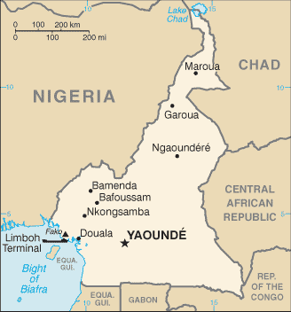
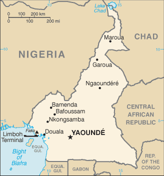

-
Introduction :: Cameroon
-
Background:French Cameroon became independent in 1960 as the Republic of Cameroon. The following year the southern portion of neighboring British Cameroon voted to merge with the new country to form the Federal Republic of Cameroon. In 1972, a new constitution replaced the federation with a unitary state, the United Republic of Cameroon. The country has generally enjoyed stability, which has enabled the development of agriculture, roads, and railways, as well as a petroleum industry. Despite slow movement toward democratic reform, political power remains firmly in the hands of President Paul BIYA.
-
Geography :: Cameroon
-
Location:Central Africa, bordering the Bight of Biafra, between Equatorial Guinea and NigeriaGeographic coordinates:6 00 N, 12 00 EMap references:AfricaArea:total: 475,440 sq kmland: 472,710 sq kmwater: 2,730 sq kmcountry comparison to the world: 55Area - comparative:slightly larger than CaliforniaLand boundaries:total: 5,018 kmborder countries (6): Central African Republic 901 km, Chad 1116 km, Republic of the Congo 494 km, Equatorial Guinea 183 km, Gabon 349 km, Nigeria 1975 kmCoastline:402 kmMaritime claims:territorial sea: 12 nmcontiguous zone: 24 nmClimate:varies with terrain, from tropical along coast to semiarid and hot in northTerrain:diverse, with coastal plain in southwest, dissected plateau in center, mountains in west, plains in northElevation:mean elevation: 667 melevation extremes: 0 m lowest point: Atlantic Ocean4045 highest point: Fako on Mont CamerounNatural resources:petroleum, bauxite, iron ore, timber, hydropowerLand use:agricultural land: 20.6% (2011 est.)arable land: 13.1% (2011 est.) / permanent crops: 3.3% (2011 est.) / permanent pasture: 4.2% (2011 est.)forest: 41.7% (2011 est.)other: 37.7% (2011 est.)Irrigated land:290 sq km (2012)Population distribution:population concentrated in the west and north, with the interior of the country sparsely populatedNatural hazards:
volcanic activity with periodic releases of poisonous gases from Lake Nyos and Lake Monoun volcanoes
volcanism: Mt. Cameroon (4,095 m), which last erupted in 2000, is the most frequently active volcano in West Africa; lakes in Oku volcanic field have released fatal levels of gas on occasion, killing some 1,700 people in 1986
Environment - current issues:waterborne diseases are prevalent; deforestation and overgrazing result in erosion, desertification, and reduced quality of pastureland; poaching; overfishing; overhuntingEnvironment - international agreements:party to: Biodiversity, Climate Change, Climate Change-Kyoto Protocol, Desertification, Endangered Species, Hazardous Wastes, Law of the Sea, Ozone Layer Protection, Tropical Timber 83, Tropical Timber 94, Wetlands, Whalingsigned, but not ratified: none of the selected agreementsGeography - note:sometimes referred to as the hinge of Africa because of its central location on the continent and its position at the west-south juncture of the Gulf of Guinea; throughout the country there are areas of thermal springs and indications of current or prior volcanic activity; Mount Cameroon, the highest mountain in Sub-Saharan west Africa, is an active volcano -
People and Society :: Cameroon
-
Population:25,640,965 (July 2018 est.)
note: estimates for this country explicitly take into account the effects of excess mortality due to AIDS; this can result in lower life expectancy, higher infant mortality, higher death rates, lower population growth rates, and changes in the distribution of population by age and sex than would otherwise be expected
country comparison to the world: 53Nationality:noun: Cameroonian(s)adjective: CameroonianEthnic groups:Cameroon Highlanders 31%, Equatorial Bantu 19%, Kirdi 11%, Fulani 10%, Northwestern Bantu 8%, Eastern Nigritic 7%, other African 13%, non-African less than 1%Languages:24 major African language groups, English (official), French (official)Religions:Roman Catholic 38.4%, Protestant 26.3%, other Christian 4.5%, Muslim 20.9%, animist 5.6%, other 1%, non-believer 3.2% (2005 est.)Demographic profile:Cameroon has a large youth population, with more than 60% of the populace under the age of 25. Fertility is falling but remains at a high level, especially among poor, rural, and uneducated women, in part because of inadequate access to contraception. Life expectancy remains low at about 55 years due to the prevalence of HIV and AIDs and an elevated maternal mortality rate, which has remained high since 1990. Cameroon, particularly the northern region, is vulnerable to food insecurity largely because of government mismanagement, corruption, high production costs, inadequate infrastructure, and natural disasters. Despite economic growth in some regions, poverty is on the rise, and is most prevalent in rural areas, which are especially affected by a shortage of jobs, declining incomes, poor school and health care infrastructure, and a lack of clean water and sanitation. Underinvestment in social safety nets and ineffective public financial management also contribute to Cameroon’s high rate of poverty.
International migration has been driven by unemployment (including fewer government jobs), poverty, the search for educational opportunities, and corruption. The US and Europe are preferred destinations, but, with tighter immigration restrictions in these countries, young Cameroonians are increasingly turning to neighboring states, such as Gabon and Nigeria, South Africa, other parts of Africa, and the Near and Far East. Cameroon’s limited resources make it dependent on UN support to host more than 320,000 refugees and asylum seekers as of September 2017. These refugees and asylum seekers are primarily from the Central African Republic and more recently Nigeria.
Age structure:0-14 years: 42.15% (male 5,445,142 /female 5,362,166)15-24 years: 19.6% (male 2,524,031 /female 2,502,072)25-54 years: 31.03% (male 4,001,963 /female 3,954,258)55-64 years: 3.99% (male 499,101 /female 524,288)65 years and over: 3.23% (male 384,845 /female 443,099) (2018 est.)population pyramid: The World Factbook Field Image ModalAfrica :: Cameroon Print
The World Factbook Field Image ModalAfrica :: Cameroon Print Image DescriptionThis is the population pyramid for Cameroon. A population pyramid illustrates the age and sex structure of a country's population and may provide insights about political and social stability, as well as economic development. The population is distributed along the horizontal axis, with males shown on the left and females on the right. The male and female populations are broken down into 5-year age groups represented as horizontal bars along the vertical axis, with the youngest age groups at the bottom and the oldest at the top. The shape of the population pyramid gradually evolves over time based on fertility, mortality, and international migration trends.
Image DescriptionThis is the population pyramid for Cameroon. A population pyramid illustrates the age and sex structure of a country's population and may provide insights about political and social stability, as well as economic development. The population is distributed along the horizontal axis, with males shown on the left and females on the right. The male and female populations are broken down into 5-year age groups represented as horizontal bars along the vertical axis, with the youngest age groups at the bottom and the oldest at the top. The shape of the population pyramid gradually evolves over time based on fertility, mortality, and international migration trends.
For additional information, please see the entry for Population pyramid on the Definitions and Notes page under the References tab.Dependency ratios:total dependency ratio: 85.9 (2015 est.)youth dependency ratio: 80 (2015 est.)elderly dependency ratio: 5.9 (2015 est.)potential support ratio: 17 (2015 est.)Median age:total: 18.6 yearsmale: 18.5 yearsfemale: 18.7 years (2018 est.)country comparison to the world: 208Population growth rate:2.54% (2018 est.)country comparison to the world: 20Birth rate:35 births/1,000 population (2018 est.)country comparison to the world: 21Death rate:9.4 deaths/1,000 population (2018 est.)country comparison to the world: 49Net migration rate:-0.1 migrant(s)/1,000 population (2017 est.)country comparison to the world: 104Population distribution:population concentrated in the west and north, with the interior of the country sparsely populatedUrbanization:urban population: 56.4% of total population (2018)rate of urbanization: 3.63% annual rate of change (2015-20 est.)Major urban areas - population:3.656 million Douala, 3.412 million YAOUNDE (capital) (2018)Sex ratio:at birth: 1.02 male(s)/female (2017 est.)0-14 years: 1.02 male(s)/female (2017 est.)15-24 years: 1.01 male(s)/female (2017 est.)25-54 years: 1.01 male(s)/female (2017 est.)55-64 years: 0.95 male(s)/female (2017 est.)65 years and over: 0.87 male(s)/female (2017 est.)total population: 1.01 male(s)/female (2017 est.)Mother's mean age at first birth:19.7 years (2011 est.)note: median age at first birth among women 25-29
Maternal mortality rate:596 deaths/100,000 live births (2015 est.)country comparison to the world: 15Infant mortality rate:total: 49.8 deaths/1,000 live births (2018 est.)male: 53.4 deaths/1,000 live births (2018 est.)female: 46.2 deaths/1,000 live births (2018 est.)country comparison to the world: 29Life expectancy at birth:total population: 59.4 years (2018 est.)male: 58 years (2018 est.)female: 60.9 years (2018 est.)country comparison to the world: 210Total fertility rate:4.58 children born/woman (2018 est.)country comparison to the world: 24Contraceptive prevalence rate:34.4% (2014)Health expenditures:4.1% of GDP (2014)country comparison to the world: 164Physicians density:0.08 physicians/1,000 population (2010)Hospital bed density:1.3 beds/1,000 population (2010)Drinking water source:improved: urban: 94.8% of populationrural: 52.7% of populationtotal: 75.6% of populationunimproved: urban: 5.2% of populationrural: 47.3% of populationtotal: 24.4% of population (2015 est.)Sanitation facility access:improved: urban: 61.8% of population (2015 est.)rural: 26.8% of population (2015 est.)total: 45.8% of population (2015 est.)unimproved: urban: 38.2% of population (2015 est.)rural: 73.2% of population (2015 est.)total: 54.2% of population (2015 est.)HIV/AIDS - adult prevalence rate:3.7% (2017 est.)country comparison to the world: 16HIV/AIDS - people living with HIV/AIDS:510,000 (2017 est.)country comparison to the world: 15HIV/AIDS - deaths:24,000 (2017 est.)country comparison to the world: 9Major infectious diseases:degree of risk: very high (2016)food or waterborne diseases: bacterial and protozoal diarrhea, hepatitis A, and typhoid fever (2016)vectorborne diseases: malaria, dengue fever, and yellow fever (2016)water contact diseases: schistosomiasis (2016)animal contact diseases: rabies (2016)respiratory diseases: meningococcal meningitis (2016)Obesity - adult prevalence rate:11.4% (2016)country comparison to the world: 135Children under the age of 5 years underweight:14.8% (2014)country comparison to the world: 44Education expenditures:2.8% of GDP (2013)country comparison to the world: 152Literacy:definition: age 15 and over can read and write (2015 est.)total population: 75% (2015 est.)male: 81.2% (2015 est.)female: 68.9% (2015 est.)School life expectancy (primary to tertiary education):total: 12 years (2015)male: 13 years (2015)female: 11 years (2015)Unemployment, youth ages 15-24:total: 10.6% (2014 est.)male: 9% (2014 est.)female: 12.7% (2014 est.)country comparison to the world: 120 -
Government :: Cameroon
-
Country name:conventional long form: Republic of Cameroonconventional short form: Cameroonlocal long form: Republique du Cameroun/Republic of Cameroonlocal short form: Cameroun/Cameroonformer: Kamerun, French Cameroon, British Cameroon, Federal Republic of Cameroon, United Republic of Cameroonetymology: in the 15th century, Portuguese explorers named the area near the mouth of the Wouri River the Rio dos Camaroes (River of Prawns) after the abundant shrimp in the water; over time the designation became Cameroon in English; this is the only instance where a country is named after a crustaceanGovernment type:presidential republicCapital:name: Yaoundegeographic coordinates: 3 52 N, 11 31 Etime difference: UTC+1 (6 hours ahead of Washington, DC, during Standard Time)Administrative divisions:10 regions (regions, singular - region); Adamaoua, Centre, East (Est), Far North (Extreme-Nord), Littoral, North (Nord), North-West (Nord-Ouest), West (Ouest), South (Sud), South-West (Sud-Ouest)Independence:1 January 1960 (from French-administered UN trusteeship)National holiday:State Unification Day (National Day), 20 May (1972)Constitution:history: several previous; latest effective 18 January 1996 (2017)amendments: proposed by the president of the republic or by Parliament; amendment drafts require approval of at least one-third of the membership in either house of Parliament; passage requires absolute majority vote of the Parliament membership; passage of drafts requested by the president for a second reading in Parliament requires two-thirds majority vote of its membership; the president can opt to submit drafts to a referendum, in which case passage requires a simple majority; constitutional articles on Cameroon’s unity and territorial integrity and its democratic principles cannot be amended; amended 2008 (2017)Legal system:mixed legal system of English common law, French civil law, and customary lawInternational law organization participation:accepts compulsory ICJ jurisdiction; non-party state to the ICCtCitizenship:citizenship by birth: nocitizenship by descent only: at least one parent must be a citizen of Cameroondual citizenship recognized: noresidency requirement for naturalization: 5 yearsSuffrage:20 years of age; universalJudicial branch:highest courts: Supreme Court of Cameroon (consists of 9 titular and 6 surrogate judges and organized into judicial, administrative, and audit chambers); Constitutional Council (consists of 11 members)judge selection and term of office: Supreme Court judges appointed by the president with the advice of the Higher Judicial Council of Cameroon, a body chaired by the president and includes the minister of justice, selected magistrates, and representatives of the National Assembly; judge term NA; Constitutional Council members appointed by the president for single 9-year termssubordinate courts: Parliamentary Court of Justice (jurisdiction limited to cases involving the president and prime minister); appellate and first instance courts; circuit and magistrate's courtsExecutive branch:chief of state: President Paul BIYA (since 6 November 1982)head of government: Prime Minister Philemon YANG (since 30 June 2009); Deputy Prime Minister Amadou ALI (since 2014)cabinet: Cabinet proposed by the prime minister, appointed by the presidentelections/appointments: president directly elected by simple majority popular vote for a 7-year term (no term limits); election last held on 7 October 2018 (next to be held in October 2025); prime minister appointed by the presidentelection results: Paul BIYA reelected president; percent of vote - Paul BIYA (CPDM) 71.3%, Maurice KAMTO (MRC) 14.2%, Cabral LIBII (Univers) 6.3%, other 8.2%Legislative branch:description: bicameral Parliament or Parlement consists of:
Senate or Senat (100 seats; 70 members indirectly elected by regional councils and 30 appointed by the president; members serve 5-year terms)
National Assembly or Assemblee Nationale (180 seats; members directly elected in multi-seat constituencies by simple majority vote to serve 5-year terms)elections:
Senate - last held on 25 March 2018 (next to be held in 2023)
National Assembly - last held on 30 September 2013 (next delayed until October 2019)election results:
Senate - percent of vote by party - NA; seats by party - CPDM 63, SDF 7; National Assembly - percent of vote by party - NA; seats by party - CPDM 148, SDF 18, UNDP 5, UDC 4, UPC 3, other 2; composition - men 74, women 26, percent of women 26%
National Assembly - last held on 30 September 2013 (next delayed until October 2019); composition - men 124, women 56, percent of women 31.3%; note - total Parliament percent of women 29.3%Political parties and leaders:Alliance for Democracy and DevelopmentCameroon People's Democratic Movement or CPDM [Paul BIYA]
Cameroon People's Party or CPP [Edith Kah WALLA]
Cameroon Renaissance Movement or MRC [Maurice KAMTO]
Cameroonian Democratic Union or UDC [Adamou Ndam NJOYA]
Movement for the Defense of the Republic or MDR [Dakole DAISSALA]
Movement for the Liberation and Development of Cameroon or MLDC [Marcel YONDO]
National Union for Democracy and Progress or UNDP [Maigari BELLO BOUBA]
Progressive Movement or MP [Jean-Jacques EKINDI]
Social Democratic Front or SDF [John FRU NDI]
Union of Peoples of Cameroon or UPC [Provisionary Management Bureau]International organization participation:ACP, AfDB, AU, BDEAC, C, CEMAC, EITI (compliant country), FAO, FZ, G-77, IAEA, IBRD, ICAO, ICRM, IDA, IDB, IFAD, IFC, IFRCS, IHO, ILO, IMF, IMO, IMSO, Interpol, IOC, IOM, IPU, ISO, ITSO, ITU, ITUC (NGOs), MIGA, MONUSCO, NAM, OIC, OIF, OPCW, PCA, UN, UNCTAD, UNESCO, UNHCR, UNIDO, UNOCI, UNWTO, UPU, WCO, WFTU (NGOs), WHO, WIPO, WMO, WTODiplomatic representation in the US:chief of mission: Ambassador Essomba ETOUNDI (since 27 June 2016)chancery:3007 Tilden Street NW, Washington, DC, 20008
telephone: [1] (202) 265-8790FAX: [1] (202) 387-3826Diplomatic representation from the US:chief of mission: Ambassador Peter Henry BARLERIN (since 20 December 2017)embassy: Avenue Rosa Parks, Yaoundemailing address: P.O. Box 817, Yaounde; pouch: American Embassy, US Department of State, Washington, DC 20521-2520telephone: [237] 22220 1500; Consular: [237] 22220 1603FAX: [237] 22220 1500 Ext. 4531; Consular FAX: [237] 22220 1752branch office(s): DoualaFlag description:three equal vertical bands of green (hoist side), red, and yellow, with a yellow five-pointed star centered in the red band; the vertical tricolor recalls the flag of France; red symbolizes unity, yellow the sun, happiness, and the savannahs in the north, and green hope and the forests in the south; the star is referred to as the "star of unity"note: uses the popular Pan-African colors of Ethiopia
National symbol(s):lion; national colors: green, red, yellowNational anthem:name: "O Cameroun, Berceau de nos Ancetres" (O Cameroon, Cradle of Our Forefathers)lyrics/music: Rene Djam AFAME, Samuel Minkio BAMBA, Moise Nyatte NKO'O [French], Benard Nsokika FONLON [English]/Rene Djam AFAMEnote: adopted 1957; Cameroon's anthem, also known as "Chant de Ralliement" (The Rallying Song), has been used unofficially since 1948 and officially adopted in 1957; the anthem has French and English versions whose lyrics differ
-
Economy :: Cameroon
-
Economy - overview:
Cameroon’s market-based, diversified economy features oil and gas, timber, aluminum, agriculture, mining and the service sector. Oil remains Cameroon’s main export commodity, and despite falling global oil prices, still accounts for nearly 40% of exports. Cameroon’s economy suffers from factors that often impact underdeveloped countries, such as stagnant per capita income, a relatively inequitable distribution of income, a top-heavy civil service, endemic corruption, continuing inefficiencies of a large parastatal system in key sectors, and a generally unfavorable climate for business enterprise.
Since 1990, the government has embarked on various IMF and World Bank programs designed to spur business investment, increase efficiency in agriculture, improve trade, and recapitalize the nation's banks. The IMF continues to press for economic reforms, including increased budget transparency, privatization, and poverty reduction programs. The Government of Cameroon provides subsidies for electricity, food, and fuel that have strained the federal budget and diverted funds from education, healthcare, and infrastructure projects, as low oil prices have led to lower revenues.
Cameroon devotes significant resources to several large infrastructure projects currently under construction, including a deep seaport in Kribi and the Lom Pangar Hydropower Project. Cameroon’s energy sector continues to diversify, recently opening a natural gas-powered electricity generating plant. Cameroon continues to seek foreign investment to improve its inadequate infrastructure, create jobs, and improve its economic footprint, but its unfavorable business environment remains a significant deterrent to foreign investment.
GDP (purchasing power parity):$89.54 billion (2017 est.)$86.47 billion (2016 est.)$82.63 billion (2015 est.)note: data are in 2017 dollars
country comparison to the world: 88GDP (official exchange rate):$34.99 billion (2017 est.) (2017 est.)GDP - real growth rate:3.5% (2017 est.)4.6% (2016 est.)5.7% (2015 est.)country comparison to the world: 98GDP - per capita (PPP):$3,700 (2017 est.)$3,700 (2016 est.)$3,600 (2015 est.)note: data are in 2017 dollars
country comparison to the world: 182Gross national saving:25.5% of GDP (2017 est.)25.2% of GDP (2016 est.)23.9% of GDP (2015 est.)country comparison to the world: 56GDP - composition, by end use:household consumption: 66.3% (2017 est.)government consumption: 11.8% (2017 est.)investment in fixed capital: 21.6% (2017 est.)investment in inventories: -0.3% (2017 est.)exports of goods and services: 21.6% (2017 est.)imports of goods and services: -20.9% (2017 est.)GDP - composition, by sector of origin:agriculture: 16.7% (2017 est.)industry: 26.5% (2017 est.)services: 56.8% (2017 est.)Agriculture - products:coffee, cocoa, cotton, rubber, bananas, oilseed, grains, cassava (manioc, tapioca); livestock; timberIndustries:petroleum production and refining, aluminum production, food processing, light consumer goods, textiles, lumber, ship repairIndustrial production growth rate:3.3% (2017 est.)country comparison to the world: 94Labor force:9.912 million (2017 est.)country comparison to the world: 52Labor force - by occupation:agriculture: 70%industry: 13%services: 17% (2001 est.)Unemployment rate:4.3% (2014 est.)30% (2001 est.)country comparison to the world: 57Population below poverty line:30% (2001 est.)Distribution of family income - Gini index:46.5 (2014 est.)44.6 (2001)country comparison to the world: 30Budget:revenues: 5.363 billion (2017 est.)expenditures: 6.556 billion (2017 est.)Taxes and other revenues:15.3% (of GDP) (2017 est.)country comparison to the world: 191Budget surplus (+) or deficit (-):-3.4% (of GDP) (2017 est.)country comparison to the world: 143Public debt:36.9% of GDP (2017 est.)32.5% of GDP (2016 est.)country comparison to the world: 143Fiscal year:1 July - 30 JuneInflation rate (consumer prices):0.6% (2017 est.)0.9% (2016 est.)country comparison to the world: 31Central bank discount rate:4.25% (31 December 2009)country comparison to the world: 89Commercial bank prime lending rate:13% (31 December 2017 est.)12.5% (31 December 2016 est.)country comparison to the world: 61Stock of narrow money:$4.857 billion (31 December 2017 est.)$3.86 billion (31 December 2016 est.)country comparison to the world: 107Stock of broad money:$4.857 billion (31 December 2017 est.)$3.86 billion (31 December 2016 est.)country comparison to the world: 111Stock of domestic credit:$6.154 billion (31 December 2017 est.)$5.714 billion (31 December 2016 est.)country comparison to the world: 125Current account balance:-$932 million (2017 est.)-$1.034 billion (2016 est.)country comparison to the world: 141Exports:$4.732 billion (2017 est.)$4.561 billion (2016 est.)country comparison to the world: 111Exports - partners:Netherlands 15.6%, France 12.6%, China 11.7%, Belgium 6.8%, Italy 6.3%, Algeria 4.8%, Malaysia 4.4% (2017)Exports - commodities:crude oil and petroleum products, lumber, cocoa beans, aluminum, coffee, cottonImports:$4.812 billion (2017 est.)$4.827 billion (2016 est.)country comparison to the world: 132Imports - commodities:machinery, electrical equipment, transport equipment, fuel, foodImports - partners:China 19%, France 10.3%, Thailand 7.9%, Nigeria 4.1% (2017)Reserves of foreign exchange and gold:$3.235 billion (31 December 2017 est.)$2.26 billion (31 December 2016 est.)country comparison to the world: 107Debt - external:$9.375 billion (31 December 2017 est.)$7.364 billion (31 December 2016 est.)country comparison to the world: 115Exchange rates:Cooperation Financiere en Afrique Centrale francs (XAF) per US dollar -605.3 (2017 est.)593.01 (2016 est.)593.01 (2015 est.)591.45 (2014 est.)494.42 (2013 est.) -
Energy :: Cameroon
-
Electricity access:population without electricity: 10.1 million (2013)electrification - total population: 55% (2013)electrification - urban areas: 88% (2013)electrification - rural areas: 17% (2013)Electricity - production:8.108 billion kWh (2016 est.)country comparison to the world: 109Electricity - consumption:6.411 billion kWh (2016 est.)country comparison to the world: 113Electricity - exports:0 kWh (2016 est.)country comparison to the world: 117Electricity - imports:55 million kWh (2016 est.)country comparison to the world: 105Electricity - installed generating capacity:1.558 million kW (2016 est.)country comparison to the world: 122Electricity - from fossil fuels:52% of total installed capacity (2016 est.)country comparison to the world: 145Electricity - from nuclear fuels:0% of total installed capacity (2017 est.)country comparison to the world: 62Electricity - from hydroelectric plants:47% of total installed capacity (2017 est.)country comparison to the world: 44Electricity - from other renewable sources:1% of total installed capacity (2017 est.)country comparison to the world: 150Crude oil - production:75,720 bbl/day (2017 est.)country comparison to the world: 46Crude oil - exports:96,370 bbl/day (2015 est.)country comparison to the world: 35Crude oil - imports:36,480 bbl/day (2015 est.)country comparison to the world: 59Crude oil - proved reserves:200 million bbl (1 January 2018 est.)country comparison to the world: 55Refined petroleum products - production:39,080 bbl/day (2015 est.)country comparison to the world: 82Refined petroleum products - consumption:45,000 bbl/day (2016 est.)country comparison to the world: 109Refined petroleum products - exports:8,545 bbl/day (2015 est.)country comparison to the world: 84Refined petroleum products - imports:14,090 bbl/day (2015 est.)country comparison to the world: 138Natural gas - production:910.4 million cu m (2017 est.)country comparison to the world: 69Natural gas - consumption:906.1 million cu m (2017 est.)country comparison to the world: 93Natural gas - exports:0 cu m (2017 est.)country comparison to the world: 79Natural gas - imports:0 cu m (2017 est.)country comparison to the world: 103Natural gas - proved reserves:135.1 billion cu m (1 January 2018 est.)country comparison to the world: 48Carbon dioxide emissions from consumption of energy:7.672 million Mt (2017 est.)country comparison to the world: 119
-
Communications :: Cameroon
-
Telephones - fixed lines:total subscriptions: 699,055 (2017 est.)subscriptions per 100 inhabitants: 3 (2017 est.)country comparison to the world: 88Telephones - mobile cellular:total subscriptions: 19,706,027 (2017 est.)subscriptions per 100 inhabitants: 79 (2017 est.)country comparison to the world: 59Telephone system:general assessment: equipment is old and outdated, and connections with many parts of the country are unreliable; 3G service and LTE service both developing given growing competition, along with a fast-developing mobile broadband sector (2017)domestic: only about 3 per 100 persons for fixed-line subscriptions; mobile-cellular usage has increased sharply, reaching a subscribership base of over 79 per 100 persons (2017)international: country code - 237; landing point for the SAT-3/WASC fiber-optic submarine cable that provides connectivity to Europe and Asia; satellite earth stations - 2 Intelsat (Atlantic Ocean); by September 2018 the country is expected to be connected to the SAIL submarine cable, providing a direct link to Brazil and with onward connectivity to other countries in the Americas; the cable will considerably improve international bandwidth and lead to better prices for consumers (2017)Broadcast media:government maintains tight control over broadcast media; state-owned Cameroon Radio Television (CRTV), broadcasting on both a TV and radio network, was the only officially recognized and fully licensed broadcaster until August 2007, when the government finally issued licenses to 2 private TV broadcasters and 1 private radio broadcaster; about 70 privately owned, unlicensed radio stations operating but are subject to closure at any time; foreign news services required to partner with state-owned national station (2007)Internet country code:.cmInternet users:total: 6,090,201 (July 2016 est.)percent of population: 25% (July 2016 est.)country comparison to the world: 67Broadband - fixed subscriptions:total: 42,117 (2017 est.)subscriptions per 100 inhabitants: less than 1 (2017 est.)country comparison to the world: 132
-
Transportation :: Cameroon
-
National air transport system:number of registered air carriers: 1 (2015)inventory of registered aircraft operated by air carriers: 3 (2015)annual passenger traffic on registered air carriers: 267,208 (2015)annual freight traffic on registered air carriers: 0 mt-km (2015)Civil aircraft registration country code prefix:TJ (2016)Airports:33 (2013)country comparison to the world: 112Airports - with paved runways:total: 11 (2017)over 3,047 m: 2 (2017)2,438 to 3,047 m: 5 (2017)1,524 to 2,437 m: 3 (2017)914 to 1,523 m: 1 (2017)Airports - with unpaved runways:total: 22 (2013)1,524 to 2,437 m: 4 (2013)914 to 1,523 m: 10 (2013)under 914 m: 8 (2013)Pipelines:53 km gas, 5 km liquid petroleum gas, 1107 km oil, 35 km water (2013)Railways:total: 987 km (2014)narrow gauge: 987 km 1.000-m gauge (2014)
note: railway connections generally efficient but limited; rail lines connect major cities of Douala, Yaounde, Ngaoundere, and Garoua; passenger and freight service provided by CAMRAIL
country comparison to the world: 89Roadways:total: 51,350 km (2011)paved: 4,108 km (2011)unpaved: 47,242 km (2011)note: there are 28,857 km of national roads
country comparison to the world: 78Waterways:(major rivers in the south, such as the Wouri and the Sanaga, are largely non-navigable; in the north, the Benue, which connects through Nigeria to the Niger River, is navigable in the rainy season only to the port of Garoua) (2010)Merchant marine:total: 19 (2017)by type: general cargo 4, other 15 (2017)country comparison to the world: 140Ports and terminals:oil terminal(s): Limboh Terminalriver port(s): Douala (Wouri)Garoua (Benoue) -
Military and Security :: Cameroon
-
Military expenditures:1.6% of GDP (2016)1.25% of GDP (2015)1.25% of GDP (2014)1.33% of GDP (2013)1.34% of GDP (2012)country comparison to the world: 69Military branches:Cameroon Armed Forces (Forces Armees Camerounaises, FAC): Army (L'Armee de Terre), Navy (Marine Nationale Republique, MNR, includes naval infantry), Air Force (Armee de l'Air du Cameroun, AAC), Rapid Intervention Brigade, Fire Fighter Corps, Gendarmerie (2015)Military service age and obligation:18-23 years of age for male and female voluntary military service; no conscription; high school graduation required; service obligation 4 years; periodic government calls for volunteers (2012)
-
Terrorism :: Cameroon
-
Terrorist groups - foreign based:Boko Haram:
aim(s): establish an Islamic caliphate across Africa
area(s) of operation: conducts lethal bombing attacks and assaults, displacing thousands of people, especially in the Far North Region
note: violently opposes any political or social activity associated with Western society, including voting, attending secular schools, and wearing Western dress (April 2018)Islamic State of Iraq and ash-Sham (ISIS)-West Africa:
aim(s): implement ISIS's strict interpretation of Sharia; replace the Nigerian Government with an Islamic state
area(s) of operation: based primarily in Northeast Nigeria along the border with Niger, with its largest presence in northeast Nigeria and the Lake Chad region; targets primarily regional military installations (April 2018) -
Transnational Issues :: Cameroon
-
Disputes - international:Joint Border Commission with Nigeria reviewed 2002 ICJ ruling on the entire boundary and bilaterally resolved differences, including June 2006 Greentree Agreement that immediately ceded sovereignty of the Bakassi Peninsula to Cameroon with a full phase-out of Nigerian control and patriation of residents in 2008Cameroon and Nigeria agreed on maritime delimitation in March 2008sovereignty dispute between Equatorial Guinea and Cameroon over an island at the mouth of the Ntem Riveronly Nigeria and Cameroon have heeded the Lake Chad Commission's admonition to ratify the delimitation treaty, which also includes the Chad-Niger and Niger-Nigeria boundariesRefugees and internally displaced persons:refugees (country of origin): 267,813 (Central African Republic), 101,404 (Nigeria) (2018)IDPs: 238,099 (2018)
Africa ::
Cameroon